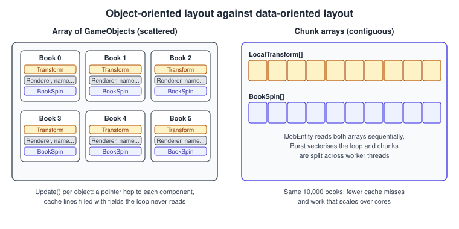
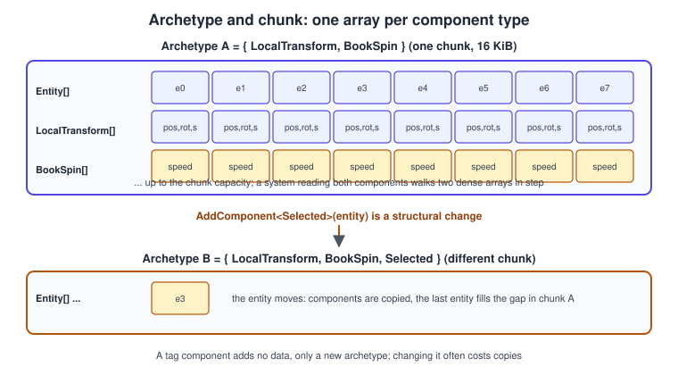
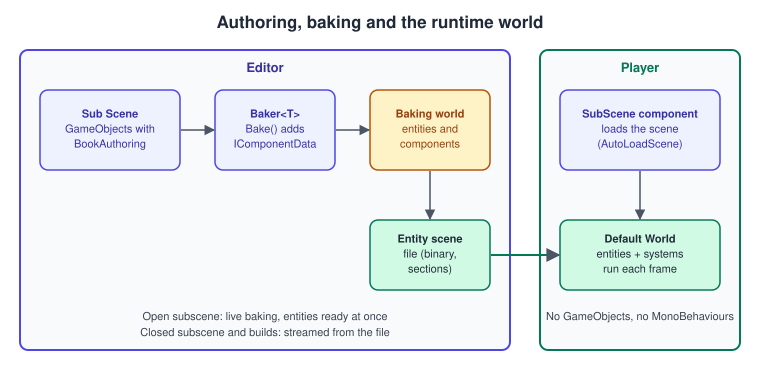
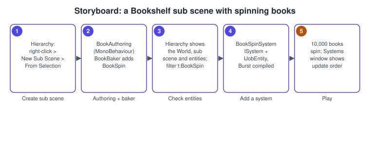

DOTS: ECS, Jobs and Burst
|
This content was generated with the assistance of AI and should be verified against the official documentation before being relied on in production. |
A GameObject scene works well for hundreds of things that each do something different. It struggles with tens of thousands of things that all do almost the same thing, because every object is a separate heap allocation, every component update is a virtual call, and the CPU spends its time waiting for memory instead of computing. Unity’s Data-Oriented Technology Stack (DOTS) answers with four parts that work together: the Entities package (an entity component system), the C# Job System (safe multithreading), the Burst compiler (native code generated from a subset of C#) and Unity Mathematics (vector types designed for SIMD). This page builds a version of the Bookshelf with 10,000 spinning and falling books and explains what each part does and when to leave it alone.
The facts were checked in November 2026. The version documented is Unity 6.3 LTS (6000.3) with Entities 1.5, Entities Graphics 1.5, Burst 1.8, Collections 2.7 and Mathematics 1.3, the versions in the 6.3 LTS package list; Unity 6.6 is mentioned where the Editor tooling changed. The code runs on every platform Unity supports, including Web builds, with the Burst and threading limits noted in the platform pages. Rendering the entities needs the Universal Render Pipeline or HDRP. Neither of the two reference books covers DOTS: both were written before the Entities package reached version 1.0. The general idea of entity component systems, with Unreal’s Mass and RealityKit as comparisons, is in Entity Component System; Apple’s version of the model is in Augmented Reality and visionOS.
When DOTS is the right tool
DOTS is not a replacement for GameObjects; it is an option for a class of problems. A rough rule:
-
Use GameObjects and MonoBehaviours for most game logic: a player, a menu, a one-off door, anything that needs the Animator, UI Toolkit, the Input System callbacks, physics callbacks or the large Asset Store ecosystem.
-
Use jobs and Burst on their own (without entities) when one expensive calculation on arrays of numbers, such as a flocking step, a procedural mesh or a pathfinding pass, is the bottleneck of an otherwise ordinary scene.
-
Use entities when the scene has thousands to millions of similar items that need to be simulated and rendered every frame: crowds, projectiles, particle-like debris, a 10,000-book library, simulation games with large worlds, or networked games with prediction (see Multiplayer and Netcode).
-
Mix them (hybrid): keep the HUD, camera and input as GameObjects, read and write entity data from them.
Measure first. The Profiler tells you whether the cost is in scripts, in rendering or in physics, and DOTS only helps the first (and parts of the third). See Profiling and Optimization.
Data-oriented design in one picture

A processor reads memory in cache lines of 64 bytes. A loop that reads a book’s rotation and speed from a scattered object pulls in the whole line, most of which it does not need, and then jumps to another object somewhere else. A loop over two dense arrays reads exactly the fields it uses, in order, so the hardware prefetcher keeps the cache full and the compiler can use SIMD instructions. Data-oriented design organises the program around this fact: data is separated from behaviour, stored in arrays of plain structs, and processed by functions that run over the arrays. The cost of this style is that you think in queries over data instead of in objects with methods.
Entities, components and systems
The Entities package has three main nouns:
-
An entity is an identifier (an index and a version). It has no data and no behaviour; it is a handle to a row of components.
-
A component is a struct of data. The usual kind is
IComponentData. Components never contain logic. -
A system is code that runs every frame over all the entities that have a given set of components.
Kinds of component
| Kind | What it is | Use it for |
|---|---|---|
Unmanaged component ( |
a blittable struct, stored in the chunk and usable in jobs and Burst |
nearly all data: position, speed, health, state |
Tag component |
an |
marking membership ( |
Enableable component ( |
a component that can be switched on and off per entity without moving the entity |
state that changes often, such as |
Buffer ( |
a resizable array attached to an entity |
variable-length data: the waypoints of a path, the items on a shelf |
Shared component ( |
a value shared by many entities; entities with different values are stored in different chunks |
grouping by a rarely changing value, such as a material set or a team; changing it is a structural change |
Managed component |
a class component, stored outside the chunk |
rare hybrid cases that must hold a reference to a managed object; it cannot be used in Burst-compiled code or jobs |
Archetypes and chunks

An archetype is the unique combination of component types an entity has. All entities of an archetype are stored in chunks, blocks of 16 KiB. A chunk contains one array per component type plus an array of entity identifiers, tightly packed; how many entities fit depends on the sizes of the components. When an entity leaves a chunk, the last entity fills the gap, and Unity creates and destroys chunks as needed.
This design explains the rules of thumb for ECS performance:
-
Queries are cheap, because a query matches whole archetypes (and then walks their chunks) instead of testing every entity.
-
Changing an entity’s component set is expensive, because the entity must be copied to a chunk of another archetype. Creating and destroying entities, adding or removing a component and setting a shared component value are structural changes; they can run only on the main thread, and making one while jobs are scheduled forces a sync point where the main thread waits for all scheduled jobs. Prefer enableable components or plain data changes for state that flips often, and batch structural changes in an entity command buffer.
-
Small components are better. A system that reads two components touches two arrays; a fat component with fields the system ignores wastes bandwidth.
Source: Entities: Archetypes and Entities: Structural changes.
Authoring, baking and subscenes
You do not create 10,000 entities by hand. You author in the usual way, with GameObjects and MonoBehaviours in the Editor, and a process called baking converts the authoring data into entities and components. The Player contains only the baked result.

-
A baker is a class that derives from
Baker<TAuthoring>, where the type argument is an authoring component, usually a MonoBehaviour. ItsBakemethod reads the authoring component and adds components to the entity. It must not cache values between calls, and it must declare any external dependency (another GameObject, an asset) withDependsOnor by reading it through the baker’sGetComponent, otherwise the entity is not rebaked when that source changes. -
A subscene holds the GameObjects that are baked. Entities cannot live in a normal Unity scene, so you place the content in a subscene (a regular scene asset referenced by a
SubScenecomponent). An open subscene is baked live as you edit and its entities are available immediately in Play mode; a closed subscene is streamed from the baked entity scene file, and builds treat every subscene as closed. -
GetEntity(TransformUsageFlags.Dynamic)returns the entity for the authoring GameObject and tells the baker how its transform will be used;Dynamicis used for things that move.
Source: Entities: Bakers, Entities: Baking and Entities: Subscenes.
Procedure: a sub scene with 10,000 books
-
Install the packages: Window > Package Manager, Unity Registry, then Entities and Entities Graphics (the latter renders baked meshes with the Universal Render Pipeline). Source: Entities: Installation.
-
Create a sub scene: in the Hierarchy, right-click and choose New Sub Scene > Empty Scene, or select GameObjects and choose From Selection. Source: Entities: Subscenes.
-
Put one book prefab and an empty
BookSpawnerGameObject inside the sub scene. Add theBookSpinAuthoringandBookSpawnerAuthoringscripts below to them. Assign the prefab to the spawner; itsMeshRendererandMeshFilterare baked into render components by Entities Graphics. Source: Entities Graphics. -
Keep the sub scene open and select its entities in the Hierarchy, which in Unity 6.6 is the default window for both GameObjects and entities: it shows entity worlds, subscenes and entities, and filters them with the
t:token (for examplet:LocalTransform). Source: What’s new in Unity 6.6. -
Add the systems below, press Play and open Window > Entities > Systems to see each system and its update order. Source: Entities: System update order.

Components and authoring code
// Assets/Scripts/Dots/BookComponents.cs
using Unity.Entities;
using Unity.Mathematics;
namespace Bookshelf.Dots
{
/// <summary>Spin around the vertical axis, in radians per second.</summary>
public struct BookSpin : IComponentData
{
public float RadiansPerSecond;
}
/// <summary>Marks a book as falling, with its vertical speed in metres per second.</summary>
public struct Falling : IComponentData
{
public float Speed;
}
/// <summary>Tag added when a falling book reaches the shelf.</summary>
public struct Landed : IComponentData { }
/// <summary>Singleton that tells the spawner system what to create.</summary>
public struct BookSpawner : IComponentData
{
public Entity Prefab;
public int CountX;
public int CountY;
public float2 Spacing;
public uint Seed;
}
}// Assets/Scripts/Dots/BookAuthoring.cs
using Unity.Entities;
using UnityEngine;
namespace Bookshelf.Dots
{
public sealed class BookSpinAuthoring : MonoBehaviour
{
[SerializeField] float degreesPerSecond = 45f;
sealed class Baker : Baker<BookSpinAuthoring>
{
public override void Bake(BookSpinAuthoring authoring)
{
Entity entity = GetEntity(TransformUsageFlags.Dynamic);
AddComponent(entity, new BookSpin { RadiansPerSecond = Mathf.Deg2Rad * authoring.degreesPerSecond });
}
}
}
}// Assets/Scripts/Dots/BookSpawnerAuthoring.cs
using Unity.Entities;
using Unity.Mathematics;
using UnityEngine;
namespace Bookshelf.Dots
{
public sealed class BookSpawnerAuthoring : MonoBehaviour
{
[SerializeField] GameObject bookPrefab;
[SerializeField, Min(1)] int countX = 100;
[SerializeField, Min(1)] int countY = 100;
[SerializeField] Vector2 spacing = new Vector2(0.35f, 0.45f);
[SerializeField] uint seed = 249;
sealed class Baker : Baker<BookSpawnerAuthoring>
{
public override void Bake(BookSpawnerAuthoring authoring)
{
if (authoring.bookPrefab == null) return;
// GetEntity on a prefab registers the prefab with the baking system and returns its entity.
Entity prefab = GetEntity(authoring.bookPrefab, TransformUsageFlags.Dynamic);
Entity self = GetEntity(TransformUsageFlags.None);
AddComponent(self, new BookSpawner
{
Prefab = prefab,
CountX = authoring.countX,
CountY = authoring.countY,
Spacing = new float2(authoring.spacing.x, authoring.spacing.y),
Seed = authoring.seed
});
}
}
}
}Source: Entities: Bakers and Entities: Baking prefabs.
Systems
A system runs every frame (or when its required components exist). There are two kinds. ISystem is a struct and is unmanaged: it can be compiled by Burst, and it is the recommended way to write systems. SystemBase is a class, can use managed objects and cannot be compiled by Burst; it exists for code that needs managed state. All the methods of a system run on the main thread; the system schedules jobs to do the heavy work on worker threads. The three methods of ISystem take a ref SystemState, which gives access to the world and the EntityManager.
Source: Entities: ISystem and Entities: System comparison.
Four ways to iterate
| API | What it does | Use it when |
|---|---|---|
|
iterates entities on the main thread |
small counts, structural changes, readable gameplay code |
|
writes the per-entity logic once in an |
the default for per-entity work, scales over cores, Burst compiled |
|
gives you each chunk to loop over |
per-chunk decisions, enableable bit masks, custom batching |
|
you fetch the arrays or chunks yourself |
rare, low-level cases |
Entities.ForEach (the earlier lambda API of SystemBase) is still documented as an iteration option for SystemBase, but new code should use SystemAPI.Query or IJobEntity. Jobs that process components in order are the most efficient option, because they use all available cores and keep data local to avoid cache misses.
A spinning-books system
// Assets/Scripts/Dots/BookSpinSystem.cs
using Unity.Burst;
using Unity.Entities;
using Unity.Transforms;
namespace Bookshelf.Dots
{
[BurstCompile]
public partial struct BookSpinSystem : ISystem
{
[BurstCompile]
public void OnCreate(ref SystemState state)
{
// The system does not run until at least one entity has a BookSpin.
state.RequireForUpdate<BookSpin>();
}
[BurstCompile]
public void OnUpdate(ref SystemState state)
{
new SpinJob { DeltaTime = SystemAPI.Time.DeltaTime }.ScheduleParallel();
}
[BurstCompile]
public void OnDestroy(ref SystemState state) { }
}
[BurstCompile]
public partial struct SpinJob : IJobEntity
{
public float DeltaTime;
// The parameters are the query: every entity with LocalTransform (read-write) and BookSpin (read-only).
void Execute(ref LocalTransform transform, in BookSpin spin)
{
transform = transform.RotateY(spin.RadiansPerSecond * DeltaTime);
}
}
}Source: Entities: IJobEntity and Burst: BurstCompile.
The same loop on the main thread with SystemAPI.Query is useful for debugging and for small counts; it reads and writes through RefRW and RefRO wrappers:
public void OnUpdate(ref SystemState state)
{
float dt = SystemAPI.Time.DeltaTime;
foreach (var (transform, spin) in SystemAPI.Query<RefRW<LocalTransform>, RefRO<BookSpin>>())
{
transform.ValueRW = transform.ValueRO.RotateY(spin.ValueRO.RadiansPerSecond * dt);
}
}Source: Entities: IJobEntity
Spawning the books once
// Assets/Scripts/Dots/BookSpawnerSystem.cs
using Unity.Collections;
using Unity.Entities;
using Unity.Mathematics;
using Unity.Transforms;
namespace Bookshelf.Dots
{
[UpdateInGroup(typeof(InitializationSystemGroup))]
public partial struct BookSpawnerSystem : ISystem
{
public void OnCreate(ref SystemState state)
{
state.RequireForUpdate<BookSpawner>();
}
public void OnUpdate(ref SystemState state)
{
// Run once: the spawner singleton is read, then the system turns itself off.
state.Enabled = false;
BookSpawner spawner = SystemAPI.GetSingleton<BookSpawner>();
int total = spawner.CountX * spawner.CountY;
// One call creates every instance of the prefab: a single structural change, not 10,000.
NativeArray<Entity> books = state.EntityManager.Instantiate(spawner.Prefab, total, Allocator.Temp);
var random = new Random(math.max(1u, spawner.Seed)); // Unity.Mathematics.Random must not start at 0
for (int i = 0; i < total; i++)
{
int x = i % spawner.CountX;
int y = i / spawner.CountX;
float3 position = new float3(x * spawner.Spacing.x, 10f + y * spawner.Spacing.y, random.NextFloat(-0.05f, 0.05f));
state.EntityManager.SetComponentData(books[i], LocalTransform.FromPosition(position));
state.EntityManager.AddComponentData(books[i], new Falling { Speed = 0f });
state.EntityManager.AddComponentData(books[i], new BookSpin { RadiansPerSecond = random.NextFloat(0.5f, 3f) });
}
books.Dispose();
}
}
}Source: Entities: ISystem and Unity Mathematics.
The loop above adds components one at a time, which moves each entity between archetypes; for a spawner that runs once that is acceptable, but a better design is to put Falling and BookSpin on the prefab through authoring so that every instance starts in its final archetype. The code is written the long way here to show AddComponentData.
System groups and update order
Systems are placed in groups, which are themselves systems with children. The three root groups update at fixed places in the player loop: InitializationSystemGroup at the end of the Initialization phase, SimulationSystemGroup at the end of the Update phase, and PresentationSystemGroup at the end of the PreLateUpdate phase. A system with no UpdateInGroup attribute is added to SimulationSystemGroup. Inside a group, order is set with UpdateBefore and UpdateAfter (relative to other direct children of the group), and with OrderFirst and OrderLast, which take precedence. Creation order, separate from update order, is controlled with CreateAfter and CreateBefore. Unity 6.6 adds a Scheduling column to the Systems window that labels the systems related by UpdateBefore and UpdateAfter to the selected one.
Source: Entities: System update order and What’s new in Unity 6.6.
Entity command buffers
A system that changes the structure of entities from inside a job cannot do it directly: structural changes run on the main thread. An entity command buffer (ECB) records the commands (create, destroy, add, remove, set) on any thread and plays them back later on the main thread, at a point you choose. In ISystem the usual way is to take a buffer from one of the built-in ECB systems, which play it back at the start or the end of the simulation group, so the structural changes of the whole frame are batched into one sync point.
// Assets/Scripts/Dots/FallingSystems.cs
using Unity.Burst;
using Unity.Entities;
using Unity.Transforms;
namespace Bookshelf.Dots
{
/// <summary>Integrates gravity for every falling book.</summary>
[BurstCompile]
[UpdateInGroup(typeof(SimulationSystemGroup))]
public partial struct FallingSystem : ISystem
{
public const float Gravity = 9.81f;
[BurstCompile]
public void OnUpdate(ref SystemState state)
{
new FallJob { DeltaTime = SystemAPI.Time.DeltaTime }.ScheduleParallel();
}
}
[BurstCompile]
partial struct FallJob : IJobEntity
{
public float DeltaTime;
void Execute(ref LocalTransform transform, ref Falling falling)
{
falling.Speed += FallingSystem.Gravity * DeltaTime;
transform.Position.y -= falling.Speed * DeltaTime;
}
}
/// <summary>Turns books that reached the shelf into landed books, using a parallel command buffer.</summary>
[BurstCompile]
[UpdateInGroup(typeof(SimulationSystemGroup))]
[UpdateAfter(typeof(FallingSystem))]
public partial struct LandingSystem : ISystem
{
[BurstCompile]
public void OnCreate(ref SystemState state)
{
state.RequireForUpdate<EndSimulationEntityCommandBufferSystem.Singleton>();
}
[BurstCompile]
public void OnUpdate(ref SystemState state)
{
var ecbSingleton = SystemAPI.GetSingleton<EndSimulationEntityCommandBufferSystem.Singleton>();
EntityCommandBuffer ecb = ecbSingleton.CreateCommandBuffer(state.WorldUnmanaged);
new LandJob { Ecb = ecb.AsParallelWriter(), ShelfHeight = 0f }.ScheduleParallel();
}
}
[BurstCompile]
partial struct LandJob : IJobEntity
{
public EntityCommandBuffer.ParallelWriter Ecb;
public float ShelfHeight;
// [ChunkIndexInQuery] supplies the sort key that keeps playback deterministic across threads.
void Execute([ChunkIndexInQuery] int sortKey, Entity entity, in LocalTransform transform, in Falling falling)
{
if (transform.Position.y > ShelfHeight) return;
Ecb.RemoveComponent<Falling>(sortKey, entity);
Ecb.AddComponent<Landed>(sortKey, entity);
}
}
}Rules for command buffers: use one buffer per job, because reused buffers can have overlapping sort keys and interleaved commands; entities returned by CreateEntity and Instantiate on a buffer are temporary until playback, and may be referenced only by later commands in the same buffer; and in the Editor a safety handle throws if you touch a buffer while a job that uses it is still scheduled.
The C# Job System
The Entities package builds on the C# Job System, which you can also use without entities to run work on worker threads. A job is a struct that implements a job interface and holds its data in fields. You schedule it, which returns a JobHandle, and complete the handle when you need the result. Data shared with a job lives in native containers such as NativeArray<T>, NativeList<T> and NativeHashMap, whose memory is not managed by the garbage collector; the safety system in the Editor detects two jobs writing the same container and a read of data a running job writes, and reports it as an exception.
| Job interface | Purpose |
|---|---|
|
one piece of work on one worker thread |
|
the same operation for each index of an array, split in batches across threads |
|
per-Transform work on a |
|
per-entity and per-chunk work, from the Entities package |
A plain-GameObject example: a floating "dust" shimmer for 5,000 books that does not use entities at all. The job computes new heights from a native array and the MonoBehaviour applies them.
// Assets/Scripts/Dots/BookBob.cs
using Unity.Burst;
using Unity.Collections;
using Unity.Jobs;
using Unity.Mathematics;
using UnityEngine;
namespace Bookshelf.Dots
{
[BurstCompile]
struct BobJob : IJobParallelFor
{
[ReadOnly] public NativeArray<float3> Basis;
[WriteOnly] public NativeArray<float3> Result;
public float Time;
public void Execute(int i)
{
float phase = i * 0.37f;
float3 p = Basis[i];
p.y += 0.02f * math.sin(Time * 2f + phase);
Result[i] = p;
}
}
public sealed class BookBob : MonoBehaviour
{
[SerializeField] Transform[] books;
NativeArray<float3> _basis;
NativeArray<float3> _result;
JobHandle _handle;
bool _scheduled;
void Start()
{
_basis = new NativeArray<float3>(books.Length, Allocator.Persistent);
_result = new NativeArray<float3>(books.Length, Allocator.Persistent);
for (int i = 0; i < books.Length; i++) _basis[i] = books[i].position;
}
void Update()
{
var job = new BobJob { Basis = _basis, Result = _result, Time = Time.time };
_handle = job.Schedule(books.Length, 64); // 64 indices per batch
_scheduled = true;
}
void LateUpdate()
{
if (!_scheduled) return;
_handle.Complete(); // wait here, as late in the frame as possible
for (int i = 0; i < books.Length; i++) books[i].position = _result[i];
_scheduled = false;
}
void OnDestroy()
{
_handle.Complete();
if (_basis.IsCreated) _basis.Dispose();
if (_result.IsCreated) _result.Dispose();
}
}
}Container allocators matter: Allocator.Temp lives for the current frame and is the fastest (it cannot be passed to a scheduled job), Allocator.TempJob lives for up to four frames and is used for data handed to a job, and Allocator.Persistent lives until you dispose it. A container that is not disposed leaks, and the Editor reports it. Writing to the same index from two jobs, or to a container that another running job reads, is an error unless you mark access with [ReadOnly] or [WriteOnly] and use NativeDisableParallelForRestriction knowingly.
Source: Unity Manual: Native containers and Collections package.
The Burst compiler
Burst translates a subset of C# (called HPC#, "high performance C#") into optimised native code through LLVM, for the platform you build for, with SIMD instructions where the loop allows it. You opt in per job or system with [BurstCompile] on the struct, and on the methods of an ISystem. What the subset requires:
-
Value types and native containers: no managed objects, no classes, and strings only through the
FixedStringtypes. -
No calls into the managed Unity API (GameObjects,
Debug.Logof a managed string aside from the supported logging path). -
Mutable static fields need
SharedStatic; static readonly data is supported. -
A function pointer or a generic that Burst cannot see statically is not compiled.
Options go in the attribute, for example [BurstCompile(FloatPrecision.Standard, FloatMode.Fast, CompileSynchronously = true)]. In the Editor, the Jobs > Burst menu has compilation switches, a synchronous compilation option and the Burst Inspector, which shows the generated assembly, so you can see whether a loop was vectorised. A job that is not compiled still runs, as ordinary slow C#, so check that Burst is active when you measure.
Source: Burst manual, Burst: Getting started and Burst: C# language support.
Unity Mathematics
Unity.Mathematics provides the vector, matrix and quaternion types that Burst vectorises: float2, float3, float4, int3, float4x4, quaternion, the static math class (math.sin, math.lerp, math.mul, math.normalize) and a small Random struct. The types follow a shader-like style, with swizzles (position.xz), component-wise operators and implicit conversions from scalars. They convert to and from UnityEngine.Vector3 and Quaternion with explicit casts, and ECS transforms (LocalTransform) use them. Use Unity.Mathematics inside jobs and systems and UnityEngine types at the edges of GameObject code. The general maths is in Vectors, Matrices and Homogeneous Coordinates and Rotations and Quaternions.
Source: Unity Mathematics.
Hybrid: entities and GameObjects together
A project rarely uses entities only. The common arrangement keeps GameObjects for the camera, input, UI and audio and uses entities for the mass simulation, and the two sides exchange data at defined points:
-
GameObjects read entity data. A MonoBehaviour takes the default world from
World.DefaultGameObjectInjectionWorld, creates anEntityQuery, and reads counts or singletons. The score HUD below counts the books that landed. -
Entities read GameObject data. Pass data into a singleton component each frame (for example the player’s input as a struct) and let systems read it.
-
Rendering. Entities Graphics draws baked mesh renderers with the Universal Render Pipeline or HDRP, using the same material and shader features as GameObjects, and batches instances efficiently. Custom per-entity shader properties are supported through material property override components.
-
Physics. The Unity Physics package (and Havok Physics for Unity) works on entities, separately from the GameObject physics of 3D Physics; the two worlds do not collide with each other.
-
What does not convert. Animator controllers, UI Toolkit, most MonoBehaviours and the legacy particle systems have no entity version in the core packages; keep them as GameObjects, optionally as companion objects on an entity, or use a DOTS alternative.
// Assets/Scripts/Dots/LandedHud.cs
using TMPro;
using Unity.Entities;
using UnityEngine;
namespace Bookshelf.Dots
{
public sealed class LandedHud : MonoBehaviour
{
[SerializeField] TMP_Text label;
EntityQuery _landed;
bool _ready;
void Start()
{
World world = World.DefaultGameObjectInjectionWorld;
if (world == null) return;
_landed = world.EntityManager.CreateEntityQuery(ComponentType.ReadOnly<Landed>());
_ready = true;
}
void Update()
{
if (!_ready) return;
label.text = $"Shelved: {_landed.CalculateEntityCount()}";
}
void OnDestroy()
{
if (_ready) _landed.Dispose();
}
}
}Source: Entities: Worlds, Entities: EntityQuery and Entities Graphics.
Common mistakes
-
Doing structural changes in a loop. Adding a component to 10,000 entities one by one causes 10,000 moves and sync points. Use a query-based
EntityManagercall, an entity command buffer or an enableable component. -
Forgetting
[BurstCompile]. The code works and is slow, so the DOTS version looks no faster than the GameObject version. Check the Burst Inspector. -
Using managed types in a Burst job. A class field, a string or a
List<T>gives a compile error in Burst or silently disables compilation of that method. UseFixedStringand native containers. -
Caching in a baker. A baker that stores a field of the authoring component in a member variable breaks baking, because
Bakeis called many times and in any order. -
Undeclared baker dependencies. Reading another GameObject’s data without
DependsOnor the baker’sGetComponentleaves stale entities after the source changes. -
Reading and writing the same component in two jobs without ordering. The safety system reports it. Declare access with
in(read-only) andref(read-write) inExecute, so the scheduler orders the jobs. -
Making a managed component the default. It costs a heap allocation and cannot be used in jobs; use an unmanaged component with a blittable struct.
-
Forgetting
Dispose. ANativeArrayallocated withAllocator.Persistentand never disposed is a leak that the Editor reports at shutdown. -
Completing jobs immediately. Calling
Complete()straight afterSchedule()removes the parallelism; complete as late as possible. -
Starting
Unity.Mathematics.Randomwith seed 0. The generator requires a non-zero seed. -
Putting every state in tags. A tag changes the archetype, which is a structural change; for state that toggles each frame use an enableable component.
Performance notes
-
Think in chunks. Fewer, smaller components per archetype mean more entities per 16 KiB chunk, and the system loops touch fewer bytes. Keep rarely used data in separate components.
-
Prefer
IJobEntityandScheduleParallel; useSchedule(single thread) when the work is tiny, because splitting small work costs more than it saves. -
Read components with
ininstead ofrefwhenever the system does not write them, so that Unity can run systems that only read the same data in parallel and can skip the change-version update. -
Use the Profiler’s Timeline view to see worker threads and sync points; the Entities Systems window shows each system’s order and scheduling relations.
-
Instantiate with the bulk
Instantiate(prefab, count, allocator)overload instead of creating entities one by one. -
Burst’s safety checks and the job debugger are on in the Editor; measure frame time in a Player build (IL2CPP, Release) before drawing conclusions.
-
The general advice on measuring and on frame budgets is in Performance and Profiling and Profiling and Optimization.
What changed recently
| Version | Date | Change |
|---|---|---|
Entities 1.0 |
2023 |
|
Unity 6.3 LTS |
December 2025 |
Entities 1.5, Entities Graphics 1.5, Burst 1.8, Collections 2.7 and Mathematics 1.3 in the package list; the documented baseline of this page |
Unity 6.6 |
September 2026 |
the standard Hierarchy window shows entity worlds, subscenes and entities, with a |
Unity 6.6 |
September 2026 |
domain reload on entering Play mode is off by default for new projects, which matters for systems and static fields that hold state between runs |
Source: What’s new in Unity 6.6 and Entities: What’s new.
See also
-
Entity Component System: the idea behind DOTS, Unreal Mass and RealityKit.
-
Game Loop and Frame Timing: where simulation and presentation sit in a frame.
-
GameObjects, Components and Transforms: the object model that entities replace for mass simulation.
-
C# Scripting and the MonoBehaviour Lifecycle: the GameObject side of the hybrid.
-
URP in Depth: the render pipeline Entities Graphics draws with.
-
3D Physics: the GameObject physics, separate from Unity Physics for entities.
-
Profiling and Optimization: finding out whether DOTS is the answer.
-
Multiplayer and Netcode: Netcode for Entities builds on this page.
-
Structs and Value Types and Unsafe Code, Spans and Performance: the C# behind blittable components.